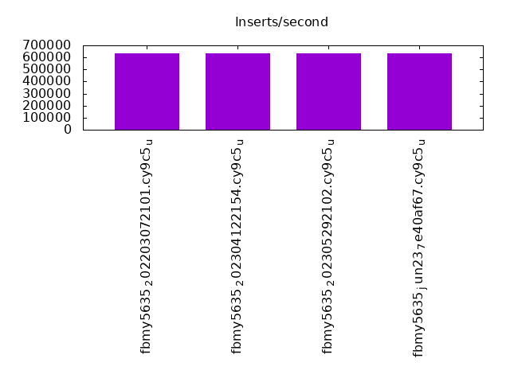
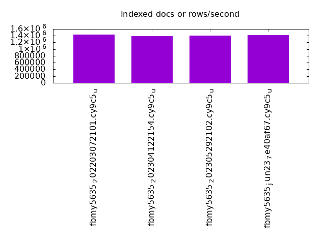
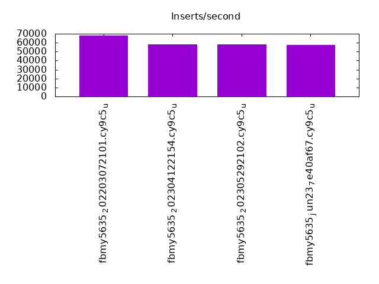
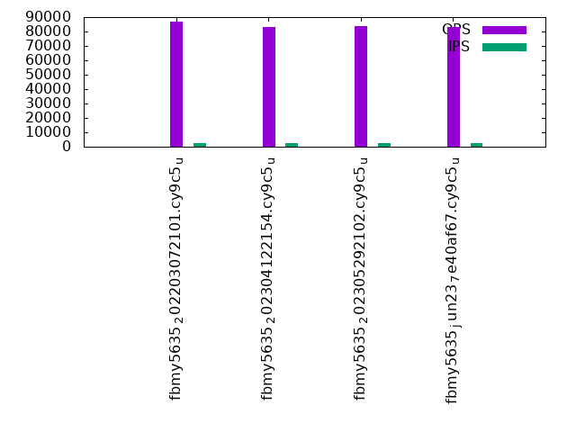
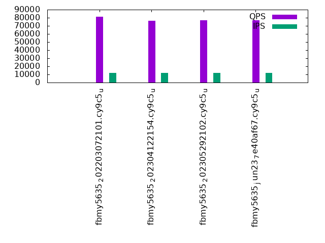
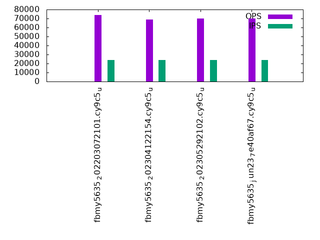

This is a report for the insert benchmark with 12000M docs and 24 client(s). It is generated by scripts (bash, awk, sed) and Tufte might not be impressed. An overview of the insert benchmark is here and a short update is here. Below, by DBMS, I mean DBMS+version.config. An example is my8020.c10b40 where my means MySQL, 8020 is version 8.0.20 and c10b40 is the name for the configuration file.
The test server has 80 cores with hyperthreads enabled, 256G RAM and fast SSD. The benchmark was run with 24 client and there were 1 or 3 connections per client (1 for queries or inserts without rate limits, 1+1 for rate limited inserts+deletes). There are 24 tables, with a client per table. It loads 500M rows per-table without secondary indexes, creates secondary indexes, then inserts 50M rows per-table with a delete per insert to avoid growing the table. The read-write tests were run for 7200 seconds each. The read+write tests were skipped. The database is larger than memory.
The tested DBMS are:
The numbers are inserts/s for l.i0 and l.i1, indexed docs (or rows) /s for l.x and queries/s for q*.2. The values are the average rate over the entire test for inserts (IPS) and queries (QPS). The range of values for IPS and QPS is split into 3 parts: bottom 25%, middle 50%, top 25%. Values in the bottom 25% have a red background, values in the top 25% have a green background and values in the middle have no color. A gray background is used for values that can be ignored because the DBMS did not sustain the target insert rate. Red backgrounds are not used when the minimum value is within 80% of the max value.
| dbms | l.i0 | l.x | l.i1 | q100.1 | q500.1 | q1000.1 |
|---|---|---|---|---|---|---|
| fbmy5635_202203072101.cy9c5_u | 634316 | 1429775 | 67923 | 86676 | 81096 | 73796 |
| fbmy5635_202304122154.cy9c5_u | 632411 | 1382182 | 57977 | 82914 | 76386 | 68814 |
| fbmy5635_202305292102.cy9c5_u | 633513 | 1401062 | 57837 | 83496 | 77048 | 69935 |
| fbmy5635_jun23_7e40af67.cy9c5_u | 631114 | 1411942 | 57670 | 83102 | 76926 | 69760 |
This table has relative throughput, throughput for the DBMS relative to the DBMS in the first line, using the absolute throughput from the previous table. Values less than 0.95 have a yellow background. Values greater than 1.05 have a blue background.
| dbms | l.i0 | l.x | l.i1 | q100.1 | q500.1 | q1000.1 |
|---|---|---|---|---|---|---|
| fbmy5635_202203072101.cy9c5_u | 1.00 | 1.00 | 1.00 | 1.00 | 1.00 | 1.00 |
| fbmy5635_202304122154.cy9c5_u | 1.00 | 0.97 | 0.85 | 0.96 | 0.94 | 0.93 |
| fbmy5635_202305292102.cy9c5_u | 1.00 | 0.98 | 0.85 | 0.96 | 0.95 | 0.95 |
| fbmy5635_jun23_7e40af67.cy9c5_u | 0.99 | 0.99 | 0.85 | 0.96 | 0.95 | 0.95 |
This lists the average rate of inserts/s for the tests that do inserts concurrent with queries. For such tests the query rate is listed in the table above. The read+write tests are setup so that the insert rate should match the target rate every second. Cells that are not at least 95% of the target have a red background to indicate a failure to satisfy the target.
| dbms | q100.1 | q500.1 | q1000.1 |
|---|---|---|---|
| fbmy5635_202203072101.cy9c5_u | 2390 | 11947 | 23910 |
| fbmy5635_202304122154.cy9c5_u | 2387 | 11935 | 23871 |
| fbmy5635_202305292102.cy9c5_u | 2386 | 11934 | 23867 |
| fbmy5635_jun23_7e40af67.cy9c5_u | 2387 | 11935 | 23867 |
| target | 2400 | 12000 | 24000 |
l.i0: load without secondary indexes. Graphs for performance per 1-second interval are here.
Average throughput:
Insert response time histogram: each cell has the percentage of responses that take <= the time in the header and max is the max response time in seconds. For the max column values in the top 25% of the range have a red background and in the bottom 25% of the range have a green background. The red background is not used when the min value is within 80% of the max value.
| dbms | 256us | 1ms | 4ms | 16ms | 64ms | 256ms | 1s | 4s | 16s | gt | max |
|---|---|---|---|---|---|---|---|---|---|---|---|
| fbmy5635_202203072101.cy9c5_u | 0.013 | 75.039 | 24.904 | 0.003 | 0.041 | nonzero | 0.372 | ||||
| fbmy5635_202304122154.cy9c5_u | 0.008 | 74.799 | 25.149 | 0.003 | 0.041 | 0.225 | |||||
| fbmy5635_202305292102.cy9c5_u | 0.007 | 75.443 | 24.506 | 0.004 | 0.040 | 0.237 | |||||
| fbmy5635_jun23_7e40af67.cy9c5_u | 0.006 | 74.843 | 25.106 | 0.003 | 0.042 | 0.229 |
Performance metrics for the DBMS listed above. Some are normalized by throughput, others are not. Legend for results is here.
ips qps rps rmbps wps wmbps rpq rkbpq wpi wkbpi csps cpups cspq cpupq dbgb1 dbgb2 rss maxop p50 p99 tag 634316 0 11 0.2 3278.2 361.0 0.000 0.000 0.005 0.583 487544 42.2 0.769 53 376.5 377.8 167.6 0.372 26573 17782 12000m.fbmy5635_202203072101.cy9c5_u 632411 0 40 0.4 2129.2 231.3 0.000 0.001 0.003 0.375 255535 35.8 0.404 45 376.3 377.7 98.4 0.225 26773 20879 12000m.fbmy5635_202304122154.cy9c5_u 633513 0 42 0.5 2138.1 233.5 0.000 0.001 0.003 0.377 280518 36.8 0.443 46 376.3 377.7 98.7 0.237 26773 21279 12000m.fbmy5635_202305292102.cy9c5_u 631114 0 37 0.4 2132.0 232.6 0.000 0.001 0.003 0.377 285589 36.8 0.453 47 376.2 377.6 98.7 0.229 26773 20482 12000m.fbmy5635_jun23_7e40af67.cy9c5_u
l.x: create secondary indexes.
Average throughput:
Performance metrics for the DBMS listed above. Some are normalized by throughput, others are not. Legend for results is here.
ips qps rps rmbps wps wmbps rpq rkbpq wpi wkbpi csps cpups cspq cpupq dbgb1 dbgb2 rss maxop p50 p99 tag 1429775 0 8047 210.1 1742.0 178.4 0.006 0.150 0.001 0.128 40258 30.2 0.028 17 772.0 773.3 207.1 0.003 NA NA 12000m.fbmy5635_202203072101.cy9c5_u 1382182 0 7345 203.6 1689.0 167.8 0.005 0.151 0.001 0.124 41303 30.0 0.030 17 771.8 773.2 208.7 0.003 NA NA 12000m.fbmy5635_202304122154.cy9c5_u 1401062 0 6476 204.1 1712.0 167.8 0.005 0.149 0.001 0.123 42201 30.1 0.030 17 771.8 773.2 208.7 0.002 NA NA 12000m.fbmy5635_202305292102.cy9c5_u 1411942 0 5575 210.5 1723.8 171.5 0.004 0.153 0.001 0.124 42357 30.3 0.030 17 771.7 773.1 208.7 0.002 NA NA 12000m.fbmy5635_jun23_7e40af67.cy9c5_u
l.i1: continue load after secondary indexes created. Graphs for performance per 1-second interval are here.
Average throughput:
Insert response time histogram: each cell has the percentage of responses that take <= the time in the header and max is the max response time in seconds. For the max column values in the top 25% of the range have a red background and in the bottom 25% of the range have a green background. The red background is not used when the min value is within 80% of the max value.
| dbms | 256us | 1ms | 4ms | 16ms | 64ms | 256ms | 1s | 4s | 16s | gt | max |
|---|---|---|---|---|---|---|---|---|---|---|---|
| fbmy5635_202203072101.cy9c5_u | 0.042 | 27.582 | 72.369 | 0.007 | 0.190 | ||||||
| fbmy5635_202304122154.cy9c5_u | 0.034 | 11.742 | 88.212 | 0.013 | 0.170 | ||||||
| fbmy5635_202305292102.cy9c5_u | 0.030 | 11.844 | 88.110 | 0.016 | 0.211 | ||||||
| fbmy5635_jun23_7e40af67.cy9c5_u | 0.040 | 11.682 | 88.263 | 0.014 | 0.227 |
Delete response time histogram: each cell has the percentage of responses that take <= the time in the header and max is the max response time in seconds. For the max column values in the top 25% of the range have a red background and in the bottom 25% of the range have a green background. The red background is not used when the min value is within 80% of the max value.
| dbms | 256us | 1ms | 4ms | 16ms | 64ms | 256ms | 1s | 4s | 16s | gt | max |
|---|---|---|---|---|---|---|---|---|---|---|---|
| fbmy5635_202203072101.cy9c5_u | 0.003 | 0.041 | 30.015 | 69.934 | 0.007 | nonzero | 0.361 | ||||
| fbmy5635_202304122154.cy9c5_u | nonzero | 0.034 | 11.486 | 88.466 | 0.013 | nonzero | 0.333 | ||||
| fbmy5635_202305292102.cy9c5_u | nonzero | 0.031 | 11.400 | 88.552 | 0.017 | 0.216 | |||||
| fbmy5635_jun23_7e40af67.cy9c5_u | nonzero | 0.041 | 11.400 | 88.543 | 0.016 | nonzero | 0.303 |
Performance metrics for the DBMS listed above. Some are normalized by throughput, others are not. Legend for results is here.
ips qps rps rmbps wps wmbps rpq rkbpq wpi wkbpi csps cpups cspq cpupq dbgb1 dbgb2 rss maxop p50 p99 tag 67923 0 1069 22.1 2489.0 285.2 0.016 0.333 0.037 4.299 146646 17.6 2.159 207 838.1 838.4 180.3 0.190 2847 2498 12000m.fbmy5635_202203072101.cy9c5_u 57977 0 765 14.2 1679.7 190.1 0.013 0.251 0.029 3.358 116175 15.9 2.004 219 841.7 842.1 182.0 0.170 2448 1849 12000m.fbmy5635_202304122154.cy9c5_u 57837 0 788 14.5 1671.4 188.2 0.014 0.256 0.029 3.333 115501 16.2 1.997 224 845.5 845.9 181.9 0.211 2447 1848 12000m.fbmy5635_202305292102.cy9c5_u 57670 0 803 14.6 1666.0 187.5 0.014 0.259 0.029 3.329 115251 16.2 1.998 225 840.1 840.5 181.9 0.227 2447 1798 12000m.fbmy5635_jun23_7e40af67.cy9c5_u
q100.1: range queries with 100 insert/s per client. Graphs for performance per 1-second interval are here.
Average throughput:
Query response time histogram: each cell has the percentage of responses that take <= the time in the header and max is the max response time in seconds. For max values in the top 25% of the range have a red background and in the bottom 25% of the range have a green background. The red background is not used when the min value is within 80% of the max value.
| dbms | 256us | 1ms | 4ms | 16ms | 64ms | 256ms | 1s | 4s | 16s | gt | max |
|---|---|---|---|---|---|---|---|---|---|---|---|
| fbmy5635_202203072101.cy9c5_u | 56.624 | 43.332 | 0.041 | 0.002 | nonzero | nonzero | 0.105 | ||||
| fbmy5635_202304122154.cy9c5_u | 49.211 | 50.731 | 0.049 | 0.007 | 0.002 | nonzero | 0.108 | ||||
| fbmy5635_202305292102.cy9c5_u | 49.749 | 50.207 | 0.035 | 0.005 | 0.003 | nonzero | 0.080 | ||||
| fbmy5635_jun23_7e40af67.cy9c5_u | 49.352 | 50.598 | 0.041 | 0.006 | 0.003 | nonzero | 0.087 |
Insert response time histogram: each cell has the percentage of responses that take <= the time in the header and max is the max response time in seconds. For max values in the top 25% of the range have a red background and in the bottom 25% of the range have a green background. The red background is not used when the min value is within 80% of the max value.
| dbms | 256us | 1ms | 4ms | 16ms | 64ms | 256ms | 1s | 4s | 16s | gt | max |
|---|---|---|---|---|---|---|---|---|---|---|---|
| fbmy5635_202203072101.cy9c5_u | 99.962 | 0.035 | 0.002 | 0.001 | 0.075 | ||||||
| fbmy5635_202304122154.cy9c5_u | 0.012 | 99.773 | 0.186 | 0.029 | 0.058 | ||||||
| fbmy5635_202305292102.cy9c5_u | 0.003 | 99.756 | 0.195 | 0.045 | nonzero | 0.069 | |||||
| fbmy5635_jun23_7e40af67.cy9c5_u | 0.006 | 99.690 | 0.249 | 0.055 | 0.001 | 0.077 |
Delete response time histogram: each cell has the percentage of responses that take <= the time in the header and max is the max response time in seconds. For max values in the top 25% of the range have a red background and in the bottom 25% of the range have a green background. The red background is not used when the min value is within 80% of the max value.
| dbms | 256us | 1ms | 4ms | 16ms | 64ms | 256ms | 1s | 4s | 16s | gt | max |
|---|---|---|---|---|---|---|---|---|---|---|---|
| fbmy5635_202203072101.cy9c5_u | 0.056 | 99.897 | 0.036 | 0.008 | 0.003 | 0.077 | |||||
| fbmy5635_202304122154.cy9c5_u | 0.001 | 99.759 | 0.198 | 0.041 | 0.001 | 0.075 | |||||
| fbmy5635_202305292102.cy9c5_u | 99.732 | 0.206 | 0.061 | 0.002 | 0.077 | ||||||
| fbmy5635_jun23_7e40af67.cy9c5_u | 99.681 | 0.252 | 0.066 | 0.002 | 0.077 |
Performance metrics for the DBMS listed above. Some are normalized by throughput, others are not. Legend for results is here.
ips qps rps rmbps wps wmbps rpq rkbpq wpi wkbpi csps cpups cspq cpupq dbgb1 dbgb2 rss maxop p50 p99 tag 2390 86676 1872 14.8 111.6 12.1 0.022 0.175 0.047 5.176 418343 31.4 4.827 290 834.9 836.8 183.4 0.105 3678 2765 12000m.fbmy5635_202203072101.cy9c5_u 2387 82914 1605 14.2 102.4 10.8 0.019 0.176 0.043 4.634 386786 31.4 4.665 303 841.0 841.0 184.3 0.108 3437 2398 12000m.fbmy5635_202304122154.cy9c5_u 2386 83496 1521 13.6 97.3 10.0 0.018 0.167 0.041 4.301 390160 31.3 4.673 300 840.4 840.5 184.0 0.080 3500 2350 12000m.fbmy5635_202305292102.cy9c5_u 2387 83102 1529 13.5 97.0 10.2 0.018 0.166 0.041 4.371 388137 31.4 4.671 302 839.8 839.9 184.1 0.087 3517 2349 12000m.fbmy5635_jun23_7e40af67.cy9c5_u
q500.1: range queries with 500 insert/s per client. Graphs for performance per 1-second interval are here.
Average throughput:
Query response time histogram: each cell has the percentage of responses that take <= the time in the header and max is the max response time in seconds. For max values in the top 25% of the range have a red background and in the bottom 25% of the range have a green background. The red background is not used when the min value is within 80% of the max value.
| dbms | 256us | 1ms | 4ms | 16ms | 64ms | 256ms | 1s | 4s | 16s | gt | max |
|---|---|---|---|---|---|---|---|---|---|---|---|
| fbmy5635_202203072101.cy9c5_u | 45.145 | 54.830 | 0.013 | 0.011 | nonzero | 0.043 | |||||
| fbmy5635_202304122154.cy9c5_u | 37.262 | 62.674 | 0.028 | 0.018 | 0.019 | 0.050 | |||||
| fbmy5635_202305292102.cy9c5_u | 38.561 | 61.376 | 0.025 | 0.015 | 0.024 | nonzero | 0.102 | ||||
| fbmy5635_jun23_7e40af67.cy9c5_u | 38.659 | 61.278 | 0.025 | 0.015 | 0.022 | nonzero | 0.081 |
Insert response time histogram: each cell has the percentage of responses that take <= the time in the header and max is the max response time in seconds. For max values in the top 25% of the range have a red background and in the bottom 25% of the range have a green background. The red background is not used when the min value is within 80% of the max value.
| dbms | 256us | 1ms | 4ms | 16ms | 64ms | 256ms | 1s | 4s | 16s | gt | max |
|---|---|---|---|---|---|---|---|---|---|---|---|
| fbmy5635_202203072101.cy9c5_u | 98.838 | 1.160 | 0.002 | 0.044 | |||||||
| fbmy5635_202304122154.cy9c5_u | 0.003 | 99.401 | 0.432 | 0.164 | 0.047 | ||||||
| fbmy5635_202305292102.cy9c5_u | 0.003 | 99.563 | 0.260 | 0.174 | nonzero | 0.068 | |||||
| fbmy5635_jun23_7e40af67.cy9c5_u | 0.001 | 99.480 | 0.334 | 0.185 | 0.039 |
Delete response time histogram: each cell has the percentage of responses that take <= the time in the header and max is the max response time in seconds. For max values in the top 25% of the range have a red background and in the bottom 25% of the range have a green background. The red background is not used when the min value is within 80% of the max value.
| dbms | 256us | 1ms | 4ms | 16ms | 64ms | 256ms | 1s | 4s | 16s | gt | max |
|---|---|---|---|---|---|---|---|---|---|---|---|
| fbmy5635_202203072101.cy9c5_u | 0.017 | 99.062 | 0.911 | 0.008 | 0.002 | 0.108 | |||||
| fbmy5635_202304122154.cy9c5_u | nonzero | 99.420 | 0.399 | 0.181 | 0.047 | ||||||
| fbmy5635_202305292102.cy9c5_u | 99.537 | 0.273 | 0.190 | nonzero | 0.068 | ||||||
| fbmy5635_jun23_7e40af67.cy9c5_u | 99.441 | 0.358 | 0.201 | 0.045 |
Performance metrics for the DBMS listed above. Some are normalized by throughput, others are not. Legend for results is here.
ips qps rps rmbps wps wmbps rpq rkbpq wpi wkbpi csps cpups cspq cpupq dbgb1 dbgb2 rss maxop p50 p99 tag 11947 81096 1316 9.4 490.2 55.3 0.016 0.119 0.041 4.736 415028 33.5 5.118 330 836.0 836.5 186.4 0.043 3405 2975 12000m.fbmy5635_202203072101.cy9c5_u 11935 76386 606 6.6 384.6 42.7 0.008 0.088 0.032 3.665 371726 33.3 4.866 349 846.5 847.0 186.4 0.050 3180 2302 12000m.fbmy5635_202304122154.cy9c5_u 11934 77048 587 7.5 394.0 43.3 0.008 0.099 0.033 3.718 375415 33.3 4.872 346 842.3 842.8 186.7 0.102 3212 2317 12000m.fbmy5635_202305292102.cy9c5_u 11935 76926 624 7.4 394.4 43.6 0.008 0.099 0.033 3.736 373978 33.4 4.862 347 843.5 844.1 186.4 0.081 3261 2382 12000m.fbmy5635_jun23_7e40af67.cy9c5_u
q1000.1: range queries with 1000 insert/s per client. Graphs for performance per 1-second interval are here.
Average throughput:
Query response time histogram: each cell has the percentage of responses that take <= the time in the header and max is the max response time in seconds. For max values in the top 25% of the range have a red background and in the bottom 25% of the range have a green background. The red background is not used when the min value is within 80% of the max value.
| dbms | 256us | 1ms | 4ms | 16ms | 64ms | 256ms | 1s | 4s | 16s | gt | max |
|---|---|---|---|---|---|---|---|---|---|---|---|
| fbmy5635_202203072101.cy9c5_u | 30.256 | 69.675 | 0.044 | 0.025 | nonzero | nonzero | 0.065 | ||||
| fbmy5635_202304122154.cy9c5_u | 22.618 | 77.294 | 0.035 | 0.020 | 0.032 | nonzero | 0.152 | ||||
| fbmy5635_202305292102.cy9c5_u | 24.733 | 75.189 | 0.028 | 0.020 | 0.031 | nonzero | 0.098 | ||||
| fbmy5635_jun23_7e40af67.cy9c5_u | 23.949 | 75.972 | 0.029 | 0.019 | 0.032 | nonzero | 0.091 |
Insert response time histogram: each cell has the percentage of responses that take <= the time in the header and max is the max response time in seconds. For max values in the top 25% of the range have a red background and in the bottom 25% of the range have a green background. The red background is not used when the min value is within 80% of the max value.
| dbms | 256us | 1ms | 4ms | 16ms | 64ms | 256ms | 1s | 4s | 16s | gt | max |
|---|---|---|---|---|---|---|---|---|---|---|---|
| fbmy5635_202203072101.cy9c5_u | 10.961 | 32.717 | 56.322 | 0.063 | |||||||
| fbmy5635_202304122154.cy9c5_u | 13.135 | 42.468 | 44.370 | 0.027 | 0.092 | ||||||
| fbmy5635_202305292102.cy9c5_u | 18.475 | 79.973 | 1.538 | 0.015 | 0.097 | ||||||
| fbmy5635_jun23_7e40af67.cy9c5_u | 11.270 | 85.194 | 3.526 | 0.010 | 0.115 |
Delete response time histogram: each cell has the percentage of responses that take <= the time in the header and max is the max response time in seconds. For max values in the top 25% of the range have a red background and in the bottom 25% of the range have a green background. The red background is not used when the min value is within 80% of the max value.
| dbms | 256us | 1ms | 4ms | 16ms | 64ms | 256ms | 1s | 4s | 16s | gt | max |
|---|---|---|---|---|---|---|---|---|---|---|---|
| fbmy5635_202203072101.cy9c5_u | nonzero | 11.167 | 33.503 | 55.329 | 0.001 | 0.111 | |||||
| fbmy5635_202304122154.cy9c5_u | 13.137 | 41.727 | 45.108 | 0.028 | 0.123 | ||||||
| fbmy5635_202305292102.cy9c5_u | 17.942 | 80.417 | 1.626 | 0.016 | 0.097 | ||||||
| fbmy5635_jun23_7e40af67.cy9c5_u | 10.742 | 85.563 | 3.685 | 0.010 | 0.115 |
Performance metrics for the DBMS listed above. Some are normalized by throughput, others are not. Legend for results is here.
ips qps rps rmbps wps wmbps rpq rkbpq wpi wkbpi csps cpups cspq cpupq dbgb1 dbgb2 rss maxop p50 p99 tag 23910 73796 2434 19.3 980.5 111.9 0.033 0.268 0.041 4.794 420788 37.3 5.702 404 835.9 837.3 188.3 0.065 3037 2605 12000m.fbmy5635_202203072101.cy9c5_u 23871 68814 1219 14.6 821.6 92.4 0.018 0.218 0.034 3.965 365873 37.4 5.317 435 846.0 847.5 187.9 0.152 2829 1902 12000m.fbmy5635_202304122154.cy9c5_u 23867 69935 1032 12.6 791.9 88.6 0.015 0.184 0.033 3.800 369884 37.0 5.289 423 849.9 851.5 188.2 0.098 2893 1918 12000m.fbmy5635_202305292102.cy9c5_u 23867 69760 1031 13.0 804.1 89.7 0.015 0.191 0.034 3.850 368995 37.2 5.289 427 849.6 851.1 188.3 0.091 2925 1950 12000m.fbmy5635_jun23_7e40af67.cy9c5_u
l.i0: load without secondary indexes
Performance metrics for all DBMS, not just the ones listed above. Some are normalized by throughput, others are not. Legend for results is here.
ips qps rps rmbps wps wmbps rpq rkbpq wpi wkbpi csps cpups cspq cpupq dbgb1 dbgb2 rss maxop p50 p99 tag 634316 0 11 0.2 3278.2 361.0 0.000 0.000 0.005 0.583 487544 42.2 0.769 53 376.5 377.8 167.6 0.372 26573 17782 12000m.fbmy5635_202203072101.cy9c5_u 632411 0 40 0.4 2129.2 231.3 0.000 0.001 0.003 0.375 255535 35.8 0.404 45 376.3 377.7 98.4 0.225 26773 20879 12000m.fbmy5635_202304122154.cy9c5_u 633513 0 42 0.5 2138.1 233.5 0.000 0.001 0.003 0.377 280518 36.8 0.443 46 376.3 377.7 98.7 0.237 26773 21279 12000m.fbmy5635_202305292102.cy9c5_u 631114 0 37 0.4 2132.0 232.6 0.000 0.001 0.003 0.377 285589 36.8 0.453 47 376.2 377.6 98.7 0.229 26773 20482 12000m.fbmy5635_jun23_7e40af67.cy9c5_u
l.x: create secondary indexes
Performance metrics for all DBMS, not just the ones listed above. Some are normalized by throughput, others are not. Legend for results is here.
ips qps rps rmbps wps wmbps rpq rkbpq wpi wkbpi csps cpups cspq cpupq dbgb1 dbgb2 rss maxop p50 p99 tag 1429775 0 8047 210.1 1742.0 178.4 0.006 0.150 0.001 0.128 40258 30.2 0.028 17 772.0 773.3 207.1 0.003 NA NA 12000m.fbmy5635_202203072101.cy9c5_u 1382182 0 7345 203.6 1689.0 167.8 0.005 0.151 0.001 0.124 41303 30.0 0.030 17 771.8 773.2 208.7 0.003 NA NA 12000m.fbmy5635_202304122154.cy9c5_u 1401062 0 6476 204.1 1712.0 167.8 0.005 0.149 0.001 0.123 42201 30.1 0.030 17 771.8 773.2 208.7 0.002 NA NA 12000m.fbmy5635_202305292102.cy9c5_u 1411942 0 5575 210.5 1723.8 171.5 0.004 0.153 0.001 0.124 42357 30.3 0.030 17 771.7 773.1 208.7 0.002 NA NA 12000m.fbmy5635_jun23_7e40af67.cy9c5_u
l.i1: continue load after secondary indexes created
Performance metrics for all DBMS, not just the ones listed above. Some are normalized by throughput, others are not. Legend for results is here.
ips qps rps rmbps wps wmbps rpq rkbpq wpi wkbpi csps cpups cspq cpupq dbgb1 dbgb2 rss maxop p50 p99 tag 67923 0 1069 22.1 2489.0 285.2 0.016 0.333 0.037 4.299 146646 17.6 2.159 207 838.1 838.4 180.3 0.190 2847 2498 12000m.fbmy5635_202203072101.cy9c5_u 57977 0 765 14.2 1679.7 190.1 0.013 0.251 0.029 3.358 116175 15.9 2.004 219 841.7 842.1 182.0 0.170 2448 1849 12000m.fbmy5635_202304122154.cy9c5_u 57837 0 788 14.5 1671.4 188.2 0.014 0.256 0.029 3.333 115501 16.2 1.997 224 845.5 845.9 181.9 0.211 2447 1848 12000m.fbmy5635_202305292102.cy9c5_u 57670 0 803 14.6 1666.0 187.5 0.014 0.259 0.029 3.329 115251 16.2 1.998 225 840.1 840.5 181.9 0.227 2447 1798 12000m.fbmy5635_jun23_7e40af67.cy9c5_u
q100.1: range queries with 100 insert/s per client
Performance metrics for all DBMS, not just the ones listed above. Some are normalized by throughput, others are not. Legend for results is here.
ips qps rps rmbps wps wmbps rpq rkbpq wpi wkbpi csps cpups cspq cpupq dbgb1 dbgb2 rss maxop p50 p99 tag 2390 86676 1872 14.8 111.6 12.1 0.022 0.175 0.047 5.176 418343 31.4 4.827 290 834.9 836.8 183.4 0.105 3678 2765 12000m.fbmy5635_202203072101.cy9c5_u 2387 82914 1605 14.2 102.4 10.8 0.019 0.176 0.043 4.634 386786 31.4 4.665 303 841.0 841.0 184.3 0.108 3437 2398 12000m.fbmy5635_202304122154.cy9c5_u 2386 83496 1521 13.6 97.3 10.0 0.018 0.167 0.041 4.301 390160 31.3 4.673 300 840.4 840.5 184.0 0.080 3500 2350 12000m.fbmy5635_202305292102.cy9c5_u 2387 83102 1529 13.5 97.0 10.2 0.018 0.166 0.041 4.371 388137 31.4 4.671 302 839.8 839.9 184.1 0.087 3517 2349 12000m.fbmy5635_jun23_7e40af67.cy9c5_u
q500.1: range queries with 500 insert/s per client
Performance metrics for all DBMS, not just the ones listed above. Some are normalized by throughput, others are not. Legend for results is here.
ips qps rps rmbps wps wmbps rpq rkbpq wpi wkbpi csps cpups cspq cpupq dbgb1 dbgb2 rss maxop p50 p99 tag 11947 81096 1316 9.4 490.2 55.3 0.016 0.119 0.041 4.736 415028 33.5 5.118 330 836.0 836.5 186.4 0.043 3405 2975 12000m.fbmy5635_202203072101.cy9c5_u 11935 76386 606 6.6 384.6 42.7 0.008 0.088 0.032 3.665 371726 33.3 4.866 349 846.5 847.0 186.4 0.050 3180 2302 12000m.fbmy5635_202304122154.cy9c5_u 11934 77048 587 7.5 394.0 43.3 0.008 0.099 0.033 3.718 375415 33.3 4.872 346 842.3 842.8 186.7 0.102 3212 2317 12000m.fbmy5635_202305292102.cy9c5_u 11935 76926 624 7.4 394.4 43.6 0.008 0.099 0.033 3.736 373978 33.4 4.862 347 843.5 844.1 186.4 0.081 3261 2382 12000m.fbmy5635_jun23_7e40af67.cy9c5_u
q1000.1: range queries with 1000 insert/s per client
Performance metrics for all DBMS, not just the ones listed above. Some are normalized by throughput, others are not. Legend for results is here.
ips qps rps rmbps wps wmbps rpq rkbpq wpi wkbpi csps cpups cspq cpupq dbgb1 dbgb2 rss maxop p50 p99 tag 23910 73796 2434 19.3 980.5 111.9 0.033 0.268 0.041 4.794 420788 37.3 5.702 404 835.9 837.3 188.3 0.065 3037 2605 12000m.fbmy5635_202203072101.cy9c5_u 23871 68814 1219 14.6 821.6 92.4 0.018 0.218 0.034 3.965 365873 37.4 5.317 435 846.0 847.5 187.9 0.152 2829 1902 12000m.fbmy5635_202304122154.cy9c5_u 23867 69935 1032 12.6 791.9 88.6 0.015 0.184 0.033 3.800 369884 37.0 5.289 423 849.9 851.5 188.2 0.098 2893 1918 12000m.fbmy5635_202305292102.cy9c5_u 23867 69760 1031 13.0 804.1 89.7 0.015 0.191 0.034 3.850 368995 37.2 5.289 427 849.6 851.1 188.3 0.091 2925 1950 12000m.fbmy5635_jun23_7e40af67.cy9c5_u
Insert response time histogram
256us 1ms 4ms 16ms 64ms 256ms 1s 4s 16s gt max tag 0.000 0.013 75.039 24.904 0.003 0.041 nonzero 0.000 0.000 0.000 0.372 fbmy5635_202203072101.cy9c5_u 0.000 0.008 74.799 25.149 0.003 0.041 0.000 0.000 0.000 0.000 0.225 fbmy5635_202304122154.cy9c5_u 0.000 0.007 75.443 24.506 0.004 0.040 0.000 0.000 0.000 0.000 0.237 fbmy5635_202305292102.cy9c5_u 0.000 0.006 74.843 25.106 0.003 0.042 0.000 0.000 0.000 0.000 0.229 fbmy5635_jun23_7e40af67.cy9c5_u
TODO - determine whether there is data for create index response time
Insert response time histogram
256us 1ms 4ms 16ms 64ms 256ms 1s 4s 16s gt max tag 0.000 0.000 0.042 27.582 72.369 0.007 0.000 0.000 0.000 0.000 0.190 fbmy5635_202203072101.cy9c5_u 0.000 0.000 0.034 11.742 88.212 0.013 0.000 0.000 0.000 0.000 0.170 fbmy5635_202304122154.cy9c5_u 0.000 0.000 0.030 11.844 88.110 0.016 0.000 0.000 0.000 0.000 0.211 fbmy5635_202305292102.cy9c5_u 0.000 0.000 0.040 11.682 88.263 0.014 0.000 0.000 0.000 0.000 0.227 fbmy5635_jun23_7e40af67.cy9c5_u
Delete response time histogram
256us 1ms 4ms 16ms 64ms 256ms 1s 4s 16s gt max tag 0.000 0.003 0.041 30.015 69.934 0.007 nonzero 0.000 0.000 0.000 0.361 fbmy5635_202203072101.cy9c5_u 0.000 nonzero 0.034 11.486 88.466 0.013 nonzero 0.000 0.000 0.000 0.333 fbmy5635_202304122154.cy9c5_u 0.000 nonzero 0.031 11.400 88.552 0.017 0.000 0.000 0.000 0.000 0.216 fbmy5635_202305292102.cy9c5_u 0.000 nonzero 0.041 11.400 88.543 0.016 nonzero 0.000 0.000 0.000 0.303 fbmy5635_jun23_7e40af67.cy9c5_u
Query response time histogram
256us 1ms 4ms 16ms 64ms 256ms 1s 4s 16s gt max tag 56.624 43.332 0.041 0.002 nonzero nonzero 0.000 0.000 0.000 0.000 0.105 fbmy5635_202203072101.cy9c5_u 49.211 50.731 0.049 0.007 0.002 nonzero 0.000 0.000 0.000 0.000 0.108 fbmy5635_202304122154.cy9c5_u 49.749 50.207 0.035 0.005 0.003 nonzero 0.000 0.000 0.000 0.000 0.080 fbmy5635_202305292102.cy9c5_u 49.352 50.598 0.041 0.006 0.003 nonzero 0.000 0.000 0.000 0.000 0.087 fbmy5635_jun23_7e40af67.cy9c5_u
Insert response time histogram
256us 1ms 4ms 16ms 64ms 256ms 1s 4s 16s gt max tag 0.000 0.000 99.962 0.035 0.002 0.001 0.000 0.000 0.000 0.000 0.075 fbmy5635_202203072101.cy9c5_u 0.000 0.012 99.773 0.186 0.029 0.000 0.000 0.000 0.000 0.000 0.058 fbmy5635_202304122154.cy9c5_u 0.000 0.003 99.756 0.195 0.045 nonzero 0.000 0.000 0.000 0.000 0.069 fbmy5635_202305292102.cy9c5_u 0.000 0.006 99.690 0.249 0.055 0.001 0.000 0.000 0.000 0.000 0.077 fbmy5635_jun23_7e40af67.cy9c5_u
Delete response time histogram
256us 1ms 4ms 16ms 64ms 256ms 1s 4s 16s gt max tag 0.000 0.056 99.897 0.036 0.008 0.003 0.000 0.000 0.000 0.000 0.077 fbmy5635_202203072101.cy9c5_u 0.000 0.001 99.759 0.198 0.041 0.001 0.000 0.000 0.000 0.000 0.075 fbmy5635_202304122154.cy9c5_u 0.000 0.000 99.732 0.206 0.061 0.002 0.000 0.000 0.000 0.000 0.077 fbmy5635_202305292102.cy9c5_u 0.000 0.000 99.681 0.252 0.066 0.002 0.000 0.000 0.000 0.000 0.077 fbmy5635_jun23_7e40af67.cy9c5_u
Query response time histogram
256us 1ms 4ms 16ms 64ms 256ms 1s 4s 16s gt max tag 45.145 54.830 0.013 0.011 nonzero 0.000 0.000 0.000 0.000 0.000 0.043 fbmy5635_202203072101.cy9c5_u 37.262 62.674 0.028 0.018 0.019 0.000 0.000 0.000 0.000 0.000 0.050 fbmy5635_202304122154.cy9c5_u 38.561 61.376 0.025 0.015 0.024 nonzero 0.000 0.000 0.000 0.000 0.102 fbmy5635_202305292102.cy9c5_u 38.659 61.278 0.025 0.015 0.022 nonzero 0.000 0.000 0.000 0.000 0.081 fbmy5635_jun23_7e40af67.cy9c5_u
Insert response time histogram
256us 1ms 4ms 16ms 64ms 256ms 1s 4s 16s gt max tag 0.000 0.000 98.838 1.160 0.002 0.000 0.000 0.000 0.000 0.000 0.044 fbmy5635_202203072101.cy9c5_u 0.000 0.003 99.401 0.432 0.164 0.000 0.000 0.000 0.000 0.000 0.047 fbmy5635_202304122154.cy9c5_u 0.000 0.003 99.563 0.260 0.174 nonzero 0.000 0.000 0.000 0.000 0.068 fbmy5635_202305292102.cy9c5_u 0.000 0.001 99.480 0.334 0.185 0.000 0.000 0.000 0.000 0.000 0.039 fbmy5635_jun23_7e40af67.cy9c5_u
Delete response time histogram
256us 1ms 4ms 16ms 64ms 256ms 1s 4s 16s gt max tag 0.000 0.017 99.062 0.911 0.008 0.002 0.000 0.000 0.000 0.000 0.108 fbmy5635_202203072101.cy9c5_u 0.000 nonzero 99.420 0.399 0.181 0.000 0.000 0.000 0.000 0.000 0.047 fbmy5635_202304122154.cy9c5_u 0.000 0.000 99.537 0.273 0.190 nonzero 0.000 0.000 0.000 0.000 0.068 fbmy5635_202305292102.cy9c5_u 0.000 0.000 99.441 0.358 0.201 0.000 0.000 0.000 0.000 0.000 0.045 fbmy5635_jun23_7e40af67.cy9c5_u
Query response time histogram
256us 1ms 4ms 16ms 64ms 256ms 1s 4s 16s gt max tag 30.256 69.675 0.044 0.025 nonzero nonzero 0.000 0.000 0.000 0.000 0.065 fbmy5635_202203072101.cy9c5_u 22.618 77.294 0.035 0.020 0.032 nonzero 0.000 0.000 0.000 0.000 0.152 fbmy5635_202304122154.cy9c5_u 24.733 75.189 0.028 0.020 0.031 nonzero 0.000 0.000 0.000 0.000 0.098 fbmy5635_202305292102.cy9c5_u 23.949 75.972 0.029 0.019 0.032 nonzero 0.000 0.000 0.000 0.000 0.091 fbmy5635_jun23_7e40af67.cy9c5_u
Insert response time histogram
256us 1ms 4ms 16ms 64ms 256ms 1s 4s 16s gt max tag 0.000 0.000 10.961 32.717 56.322 0.000 0.000 0.000 0.000 0.000 0.063 fbmy5635_202203072101.cy9c5_u 0.000 0.000 13.135 42.468 44.370 0.027 0.000 0.000 0.000 0.000 0.092 fbmy5635_202304122154.cy9c5_u 0.000 0.000 18.475 79.973 1.538 0.015 0.000 0.000 0.000 0.000 0.097 fbmy5635_202305292102.cy9c5_u 0.000 0.000 11.270 85.194 3.526 0.010 0.000 0.000 0.000 0.000 0.115 fbmy5635_jun23_7e40af67.cy9c5_u
Delete response time histogram
256us 1ms 4ms 16ms 64ms 256ms 1s 4s 16s gt max tag 0.000 nonzero 11.167 33.503 55.329 0.001 0.000 0.000 0.000 0.000 0.111 fbmy5635_202203072101.cy9c5_u 0.000 0.000 13.137 41.727 45.108 0.028 0.000 0.000 0.000 0.000 0.123 fbmy5635_202304122154.cy9c5_u 0.000 0.000 17.942 80.417 1.626 0.016 0.000 0.000 0.000 0.000 0.097 fbmy5635_202305292102.cy9c5_u 0.000 0.000 10.742 85.563 3.685 0.010 0.000 0.000 0.000 0.000 0.115 fbmy5635_jun23_7e40af67.cy9c5_u